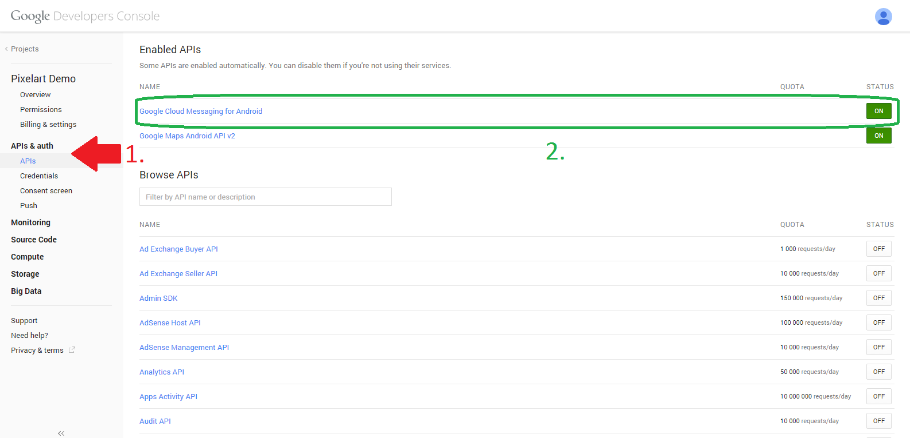
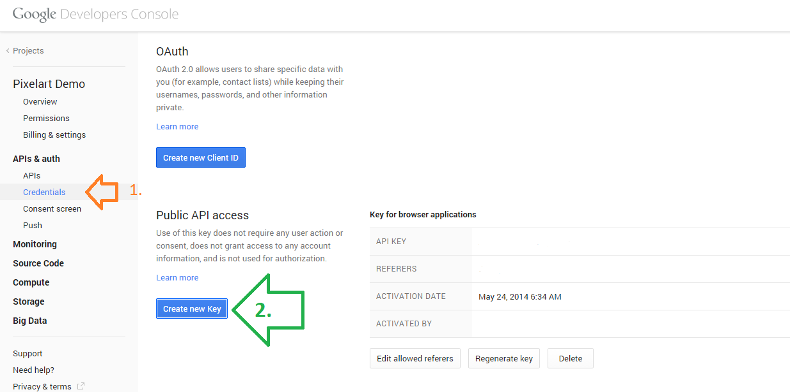
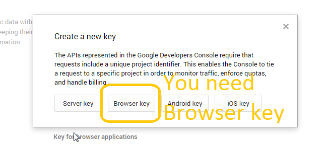
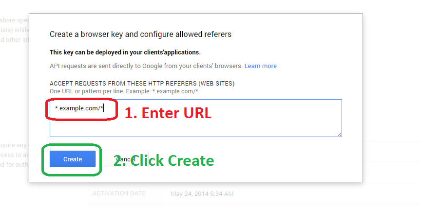
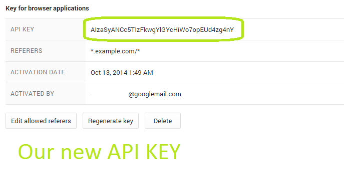
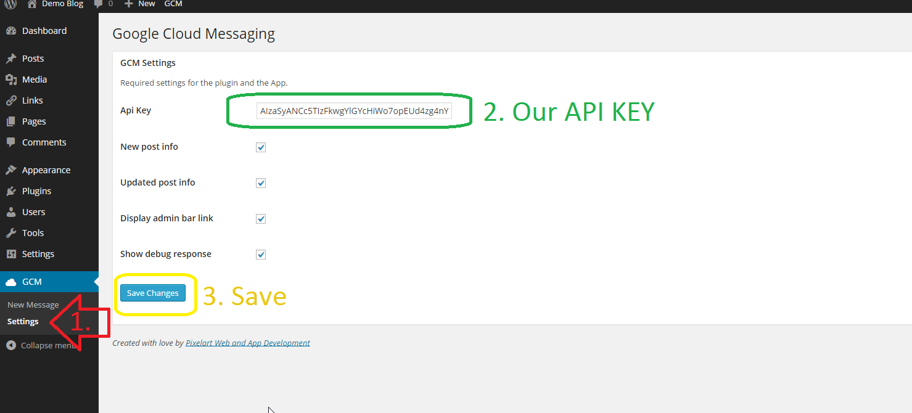

WordPress GCM Plugin
- created: 12/17/2014
- latest update: 12/31/2014
- by: Deniz Celebi and Pixelart Web and App Development
- email: contact@pixelartdev.com
How To Start
Before we can start, you need an API Key. If you already know, how to obtain one, jump to step 7, else follow these steps:
1. You need a Google Account. If you already have one, go to the Google Api Console, and login. Create a new Project if you haven't already.
2. Now select your Project and go to "APIs & auth" > "APIs" and activate "Google Cloud Messaging for Android".

3. No you need youir API Key. Tp get one navigate to "APIs &auth" > "Credentials". Then click on "Create new Key".

4. Now this step is very important: Click on "Browser key", not on "Server key" (but on some servers "Server key" is working).

5. Just enter your Domain like below an press "Create".

6. Now you will see you Api Key. Copy the line "API KEY" highlited below. This is your API Key.

7. Now open your WordPress Admin Backend, on go to "GCM" > "Settings". Enter in the Api Key Field your Api Key and press "Save Changes".

8. Your done!
The Message Types
Now the Plugin comes with 3 different Message Types out of the box.
The first one you already know, its the normal "message" one. The two others are "new_post" and "update".
As GCM sends Messages in Json format it needs two attributes. The first Parameter ist the message type, the second one is the data.
We did it in a way thats is usefull for every need, so you need 2 parameters for sending a message or something like that.
- The first one is always the "type" of the message. The plugin uses 3 types of messages; 1. the normal "message" which just sends a message, the second "new_post", which notifys the app that a new post is released and the third "update" which lets the app know that a post is been updated.
-
The second parameter is the "data" parameter. It contains what to send. Again the App has different data types: if the type is "message", it will just send the message content as data. If type is "new_post" or "update", it will send the post id, author, title and url.
So if a new post will be published, it automatically sends a GCM-Message containing the post title, url, id and author, if your activated it under the settings.

Custom Message Type
If you want to Create your custom message type and message, all you need is to add a function called what ever you want:
function xy() {
$messageData = "Hello wolrd!";
$messageType = "myType";
px_sendGCM($messageType, $messageData);
}
px_sendGCM($messageType, $messageData, $ids)
The first two are must and are needed to work. The third one is optional and is used e.g. if we send a single device message. In theory it could contain up to 999 single ids, but you shouldn't do that. If you want to send to all ids, just leave it blank, don't use the third parameter, the function will notice it and send it to all ids.
The function returns a html string, which could be outputted. The string is just the response, with how many succeded and how many failed to send and if debug is activated, if will output debug messages from Google.
Device List
The plugin provides a device list where you could see each device and its information. Here you have the possiblity to directly delete a device from the database, or sort the table or search for a tag. If you click on the gcm id, it opens a detail page with information about the registrated device and a stats of how many message were sent to this device. And of course you can send a single message to this device.
Stats
As you may have noticed, the plugin has a stats page. This page shows you some statistics about the registrations your usage and more. It has 15 predefined colors for the charts (the third chart uses only green and red). If you have more than 15 entries in your chart, you just need to add a new entry in the $color1 and $color2 array with your color.
The arrays could be found in the stats.php on line 8 and 26. The array looks like this:
$color1 = array(
16 => '#1c99e1',
);
If you want to add a new color, add a dark one to the array $color1 and a light version of the same color to the array $color2.
Export
The plugin provides the option to export all the information to a excel readable file, with the whole information about every device (like registration date, id, stats, model, os, ...)
App side
Now lets come to the most important side: The Client side
The plugin wouldn't be so usefull without an sample app, which shows how to implement everything. You can just copy the example classes from the sample and use them in your project. When an device registers its self, it also gives the information about its os and model. We strongly recommend of copying just the sample 3 classes, and then do your stuff in the 3 methods. In the MainActivity, you will see in the onCreate this:
As you will see for each message type we set the method which handles what to do. Now if you have your own, custom Message type, you need to set here what to do with it. But before we get here, you need to do some pre work: Open the GcmIntentService.java . There you should see this:
Here we define a method which does what we want with the message directly from GCM. We define a method and set its parameter the content of the message. The method does the work, like cutting out information of the message and gives it to the previously showen MainActivity. A method would look like this (e.g. for New Post Notification):
It looks complicated, yes, but actually it isn't. The most important part is first the strings at the top and the intents. The rest is nearly the same for every method: It set the settings for the notification in the statusbar, gets sound settings and so on. Just one thing changes in every method: The text which will be showen in the Statusbar. So if you won't show anything in the Statusbar (e.g. the message is only for the app to delete something or set a setting), then just delete the whole notification part after the intents.
So now lets get back to the MainActivity. We know now how the retrieve the message and how to handle it. But now comes another big topic: How to register? Is actually quite easy, you just need to copy the whole part which is commented with "GCM Registration Part - REGISTRATION TO YOUR WEBSITE" to your code and call the functions. If you read through the code you will find everything you need!
Now lets go and build some awesome things with it!
And don't forget to rate ;-)
Info
Plugin Homepage: http://pixelartdev.com/referenz/wp-google-cloud-messaging-plugin (German)